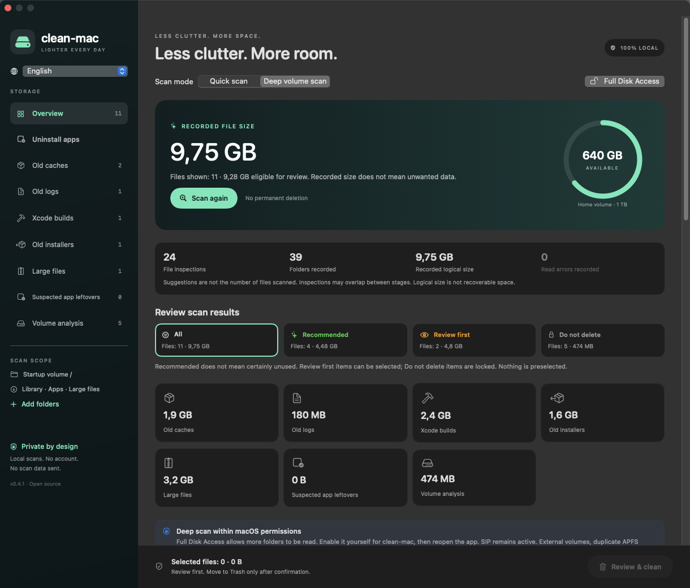
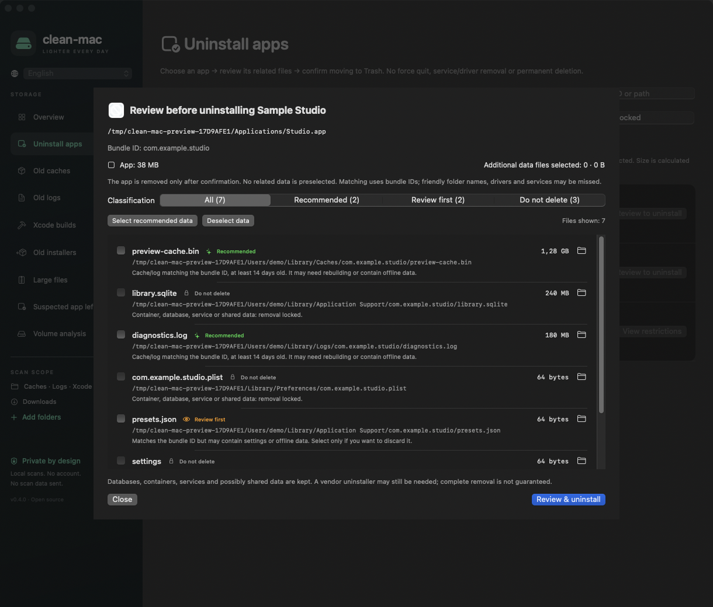
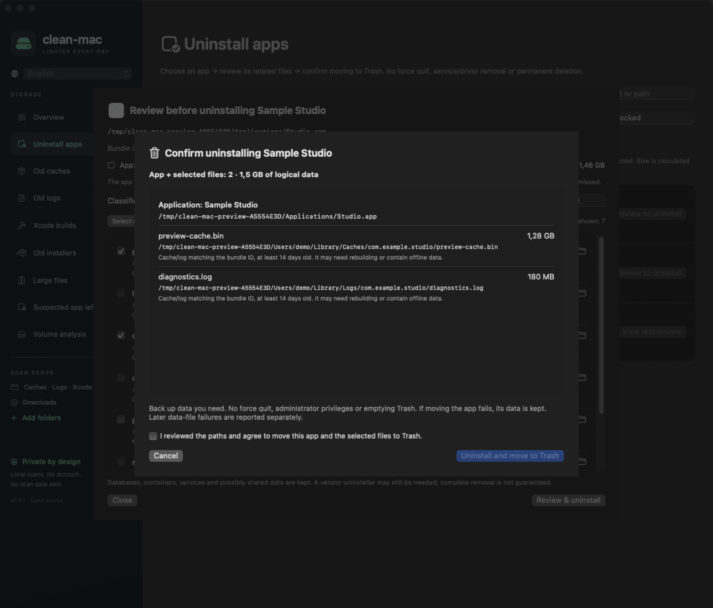
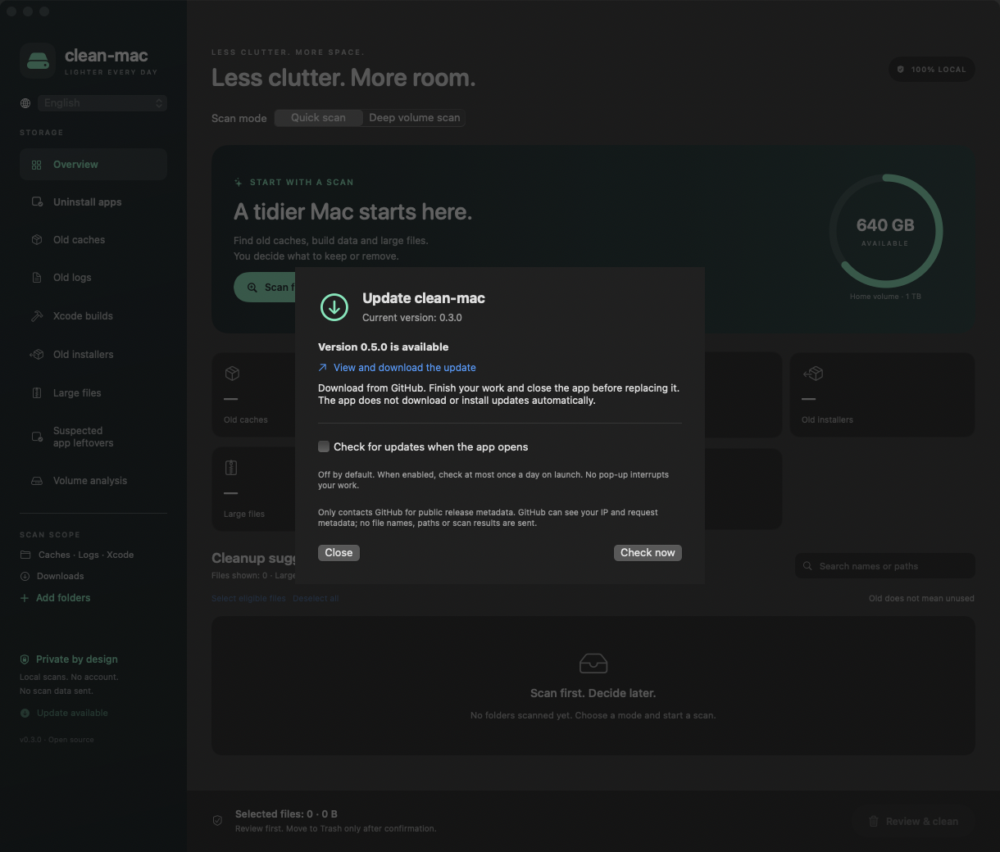

Find what adds up.
Quick scans inspect old caches, logs, Xcode builds and downloads. Deep scans reveal large files and folders, including folders made of many small files.
Understand what takes up space. Review the suggestions. Remove only what you choose — with a native app that keeps you in control.
Universal DMG · Apple silicon + Intel · v0.3.0 · macOS 14+ · MIT license · Free
Ad-hoc signed, not notarized. macOS can block this download.




LESS GUESSWORK
No mystery “junk” score. Each suggestion has a location, a rule, and a reason to look twice.
Quick scans inspect old caches, logs, Xcode builds and downloads. Deep scans reveal large files and folders, including folders made of many small files.
Review a third-party app and data matching its bundle ID. Keep the data you need. Shared, sensitive and system locations stay locked.
Filter Recommended, Review first and Do not delete. Nothing is preselected. Confirm the exact paths before anything moves to Trash.
A CLEANER, NOT A BLACK BOX
Old does not mean unused. Large does not mean unwanted. clean-mac explains its limits instead of promising a miracle.
No account, server, cloud AI or telemetry in the app. Scans read metadata, except bounded app identity plists.
Selected items move through the macOS Trash API. No permanent-delete fallback, force quit or automatic Empty Trash.
System data is analysis-only. No sudo, privileged helper or SIP bypass. Files are checked again before each move.
Coming in v0.4.0, not in the current v0.3.0 download. The optional update check is off by default. Check manually, or let it check at most once a day on launch. It only reads public GitHub release metadata, sends no scan data, and never downloads or installs anything automatically.
Moving files to Trash does not free space yet. You decide when to empty it in Finder.
THREE DELIBERATE STEPS
Choose a quick scan, a deep volume scan, or an app to review. Reading is limited by macOS permissions.
Inspect paths, sizes and explanations. Reveal items in Finder. Keep anything you are unsure about.
Review the captured selection and acknowledge it. Check the report and Finder Trash after the operation.
INSTALL IN FOUR STEPS
This release is ad-hoc signed, not Developer ID signed or notarized. macOS can block the disk image or the app. These steps keep every security protection on.
Save the DMG and SHA256SUMS from the release into the same folder.
In Terminal, inside that folder, run this command. It must report OK.
shasum -a 256 -c SHA256SUMSOpen the DMG and drag clean-mac.app onto the Applications shortcut. Open the copied app, not the one on the disk image, then eject the disk image.
If macOS blocks an unidentified developer, right-click the app and choose Open, or go to System Settings → Privacy & Security and choose Open Anyway. Do this only after verifying the source and checksum.
Never disable Gatekeeper or SIP. If macOS reports malware, stop. Do not bypass a malware warning. If you cannot approve the app, build it from source instead.
Apple’s Open Anyway guidanceOPEN BY DESIGN
The app is free under the MIT license. Read the code, build it locally, report an issue, or help make the next version better.
Requires macOS 14+ and Xcode or Command Line Tools with Swift 6+.
git clone https://github.com/vuluu2k/clean-mac.git
cd clean-mac
swift test
./Scripts/run-app.shThis download is ad-hoc signed, not notarized. macOS can block it. Read the installation guide and back up important data before cleanup.
FAQ
No. This page introduces the project. Install the native macOS app or build it yourself. The screenshots above show the real app with sample data.
No. Matching uses exact bundle IDs and can miss friendly folder names, portable apps, plugins or CLI tools. System, database, container and shared data stay protected. Some apps need the vendor uninstaller.
The app has fixture-based tests and bilingual UI checks. Real uninstall/Put Back, Full Disk Access behavior, cloud providers, VoiceOver, macOS 14 and Intel still need manual verification. No cleanup can promise zero data-loss risk.
Yes. The app has a language selector and remembers your choice. This website also supports both languages. Some native system dialogs follow macOS language settings.
This release is ad-hoc signed, without Developer ID or notarization. Verify the checksum and read the installation guide. Do not disable Gatekeeper or SIP. If macOS reports malware, stop. You can build from source instead.